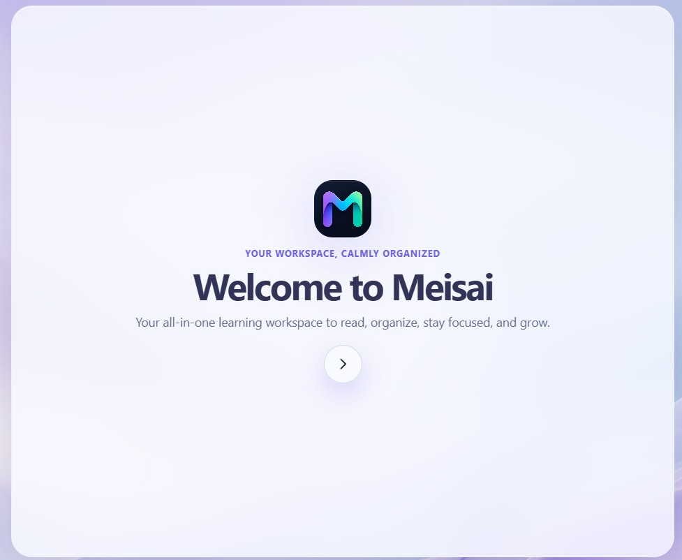

Too many disconnected tools
Switching between task apps, note tools, readers, timers, bookmarks, and career trackers creates friction before meaningful work even begins.
All-in-one Chrome workspace
Meisai turns every new tab into a focused command center for tasks, notes, knowledge, reading, focus sessions, learning, and career growth.

The problem
Ideas begin in one tab, reading continues in another, tasks disappear into a list, and learning progress gets separated from the work it should support.
Switching between task apps, note tools, readers, timers, bookmarks, and career trackers creates friction before meaningful work even begins.
Saved pages, screenshots, highlights, and quick thoughts become isolated fragments instead of an accessible personal knowledge system.
The browser is where work happens—and where distraction happens. Productivity tools should be available at that exact point of need.
The Meisai approach
Meisai brings the full productivity loop into Chrome, so every action—from saving an article to preparing for an interview—lives in one coherent system.
Save pages, notes, screenshots, links, code, tasks, and ideas the moment they appear.
Find content through Notes, Read Later, Knowledge Vault, Calendar, Learning Hub, or one universal command palette.
Plan the day, start a Pomodoro, block distractions, and keep the next meaningful action visible.
Connect learning resources, projects, job applications, interview details, and resume versions.
Everything in one place
Each feature is useful alone. Together, they create a calmer and more continuous way to work, learn, and grow.
Home & planning
See today's focus, tasks, notes, habits, weather, upcoming events, countdowns, calendar, and Pomodoro without opening another app.
Universal command palette
Press Ctrl/Cmd + K from any Meisai page to find saved content, navigate features, create entries, open URLs, or search the web.
Read Later & Reading Mode
Read full articles with adjustable themes and type, track progress, highlight passages in four colors, and attach comment notes.
Notes & Knowledge Vault
Store color-coded notes, links, text, code, images, and screenshots as searchable cards with tags, pinning, favorites, and rich editing.
Focus system
Use preset or custom Pomodoro sessions, pause and resume across pages, block chosen websites during focus, and take controlled five-minute breaks.
Learning & career growth
Follow roadmap.sh paths, organize resources, document projects, track job applications and interview rounds, and keep resume versions with their files.
Always within reach
A small, movable edge toolbar follows you across supported websites. Save a page, enter Reading Mode, capture a screenshot, or open Notes without breaking your flow.
Designed for calm momentum
Choose your name and learning direction, then shape the workspace with themes, wallpapers, widgets, locations, quotes, and notification preferences.

Built around your progress
Meisai connects planning, knowledge, reading, focus, learning, and career progress so the next useful action is always easier to find.
Start in minutes
Install the extension and open a new browser tab.
Add your name and optionally choose a built-in or custom learning roadmap.
Capture tasks and knowledge, plan focused sessions, and let the workspace grow with you.
Frequently asked questions
Need something else? Visit the Help & Support page or send feedback directly.
Meisai brings tasks, calendars, habits, notes, saved reading, knowledge, focus sessions, learning paths, projects, jobs, and resumes into one connected workspace.
Press Ctrl/Cmd + K from any Meisai page to find saved content, navigate features, create entries, open a URL, or search the web.
Read Later organizes articles you want to return to. Reading Mode presents an article in a focused layout with themes, progress, highlights, and comment notes.
Supported-page access powers the visible Meisai Helper, user-requested Reading Mode, screenshot capture, and user-configured website blocking. See the support page for a permission-by-permission explanation.
Add distracting websites in Settings. Meisai blocks those sites while a Pomodoro focus session is active and supports controlled five-minute breaks.
Meisai requires Google Chrome 114 or later and uses Manifest V3 extension APIs.
Your next tab can do more
Bring planning, knowledge, focus, reading, learning, and growth into one calm browser workspace.
__AVAILABILITY_NOTE__